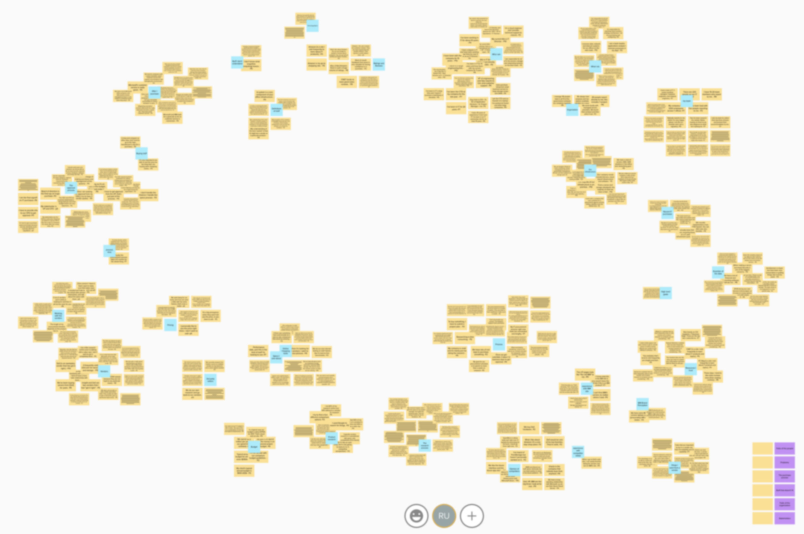
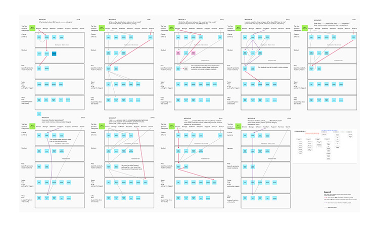
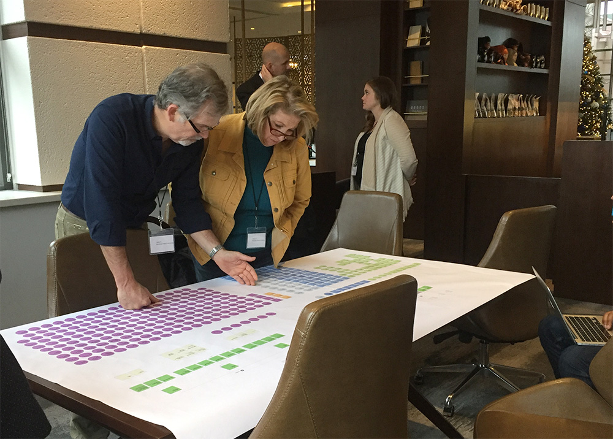
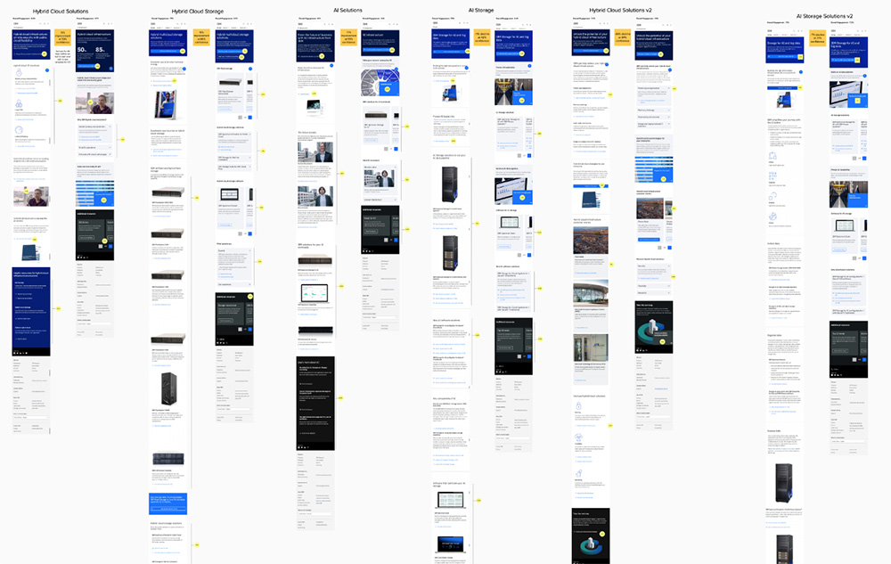

The IBM Systems web site offers customers over 330 hardware and software products that run the world's banks, governments, and airlines. The digital property my team was assigned to fix was badly outdated and bloated – we had 7,000 URLs and a tangle of corporate jargon, hidden navigation and pages that were invisible to SEO crawlers.
Design a user-centric marketing web site for IBM Systems customers while shrinking the site footprint, migrating to a new platform, and optimizing for SEO.
Because no user research had been done, we had to start from scratch and began collecting data on all fronts. We conducted an audit of our 7,000 links and ranked them on a scale I developed. With a teammate, I recruited ten users and we led one-hour generative studies, resulting in the following affinity diagram of the user responses.  We also obtained some industry benchmarks that allowed us to understand the larger market landscape and speak knowledgeably to stakeholders.
Taking the insights from our user interviews, we identified specific user journeys and mapped to Jobs-To-Be-Done. Because the existing marketing personas we had were created by an agency and of low quality, we elected to use archetypes over personas. This allowed us to emphasize the practical tasks two main users were trying to accomplish on our site. This was my resulting diagram that I presented to executives and stakeholders. 
From these initial steps, I created a new information architecture for the site. After several rounds of revisions we had a model that satisfied our five lines of business. We then created a working page model and created connections and hierarchies for all of our pages.
We used these insights to design the new site and its parent and child page structures. Along the way we conducted frequent playbacks and conversations with stakeholders across five lines of business. This advocacy and teamwork included presentations to top IBM executive leadership and rounds of evaluative testing on our pages designs and user flows. Below is one meeting where some of our stakeholders reviewed the new information architecture I had created and printed on a plotter. These conversations were extremely productive. 
Working closely with our SEO and content teams from the beginning, we built design and content guidance to make the new structure would be able to be implemented consistently across teams.
The new web property resulted in an engagement rate significantly higher than the company average and strong SEO results that reflected the design decisions we had made throughout the process. This is a representation of the pages that we built as part of the revamped site structure.  As a final step, I worked with our page globalization team to roll the site out to over 30 geographies and this became the standard reference for future improvements to the site.